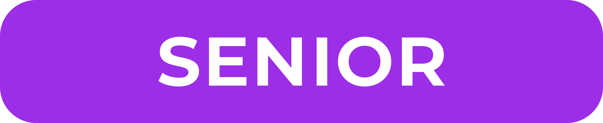
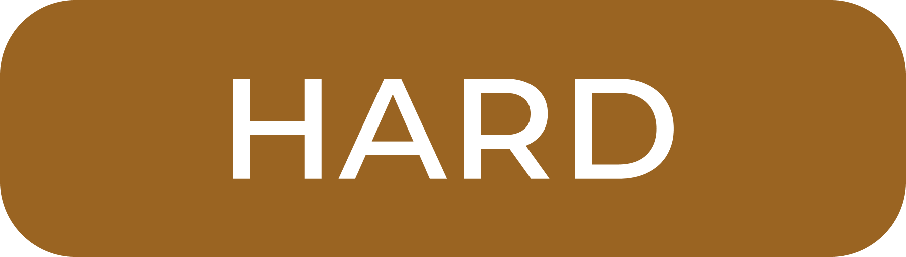

Это решение.
По умолчанию оно скрыто, чтобы вы могли в процессе чтения главы решить задание сначала самостоятельно.
Здесь представлены обозначения, используемые в этой книге. Уделите пару минут, чтобы вы могли быстрее ориентироваться в обилии материала.
🧐
Это Макс Мин.
Узнав, что вы решили почитать эту книгу, он подумал, что хорошо бы составить вам компанию, чтобы вам не было одиноко. Макс тоже интересуется анализом данных и статистикой, но до этого момента он всё никак не мог взяться за изучение этой области.
Он немножко дотошный скептик, поэтому носит монокль и любит задавать всякие вопросы. Иногда он спорит с автором, а иногда просто оставляет свои комментарии, читая главы книги.
Макс надеется, что станет вам приятной компанией. Или, по крайне мере, не помешает изучению материала…
— Не обзывайся. Я не дотошный. Я просто хочу понять.
| Лейбл | Смысл |
|---|---|
| Материал в разделе достаточно простой и подойдет для тех, кто только начинает освоение R, статистики и анализа данных. | |
 |
Материал в разделе нормальной сложности. Потребуется некоторая база, однако всё достаточно понимабельно. |
|  | Продвинутый материал для тех, кто уверенно себя чувствует с предыдущими разделами и хочет копнуть поглубже |
| Раздел для тех, кто преисполнился в собственном познании и идёт по пути постижения аналитико-статистического дзена |
При создании книги не ставилась цель однозначно соотнести её содержание с программой обучения статистики и анализу данных на некотором абстрактном усредненном психологическом факультете.
Тем не менее, можно воспользоваться следующими эвристиками:
где-то между бакалавриатом и исследовательской магистратурой по психологииСодержание разделов не соотносится с требованиями к знаниям и умениям соответствующих позиций аналитиков в индустрии!
По крайне мере, задачи такого соотнесения при написании книжки не стояло. Это просто стильные удобные слова, чтобы обозначит уровень сложности материала.
| Лейбл | Смысл |
|---|---|
| Это простое задание на проверку понимания основы основ | |
| Это задание нормальной сложности: надо применить изученное в аналогичной ситуации | |
|  | Это задание на подумать: придется применить изученное в новой ситуации |
| Это задание, чтоб прям поразмыслить и, возможно, поискать инфу за пределами книжки. По крайне мере, оно таковым задумано. |
Она может касаться как материала книги, так и хода изложения.
Некая практическая рекомендация, что или как можно сделать в какой-то ситуации.
Некое замечание относительно материала, работы ПО или чего-либо еще.
Нечто важное относительно того, что может сломать код, повредить данные, исказить результаты анализа данных или нанести ещё какой-либо ущерб вашей кропотливой аналитической работе.
Она важная. Очень. Прям крайне. Pay attention, так сказать, сюда, пожалуйста.
В разделах про математику, но и не только в них, встречаются следующие блоки.
Теорема 1 Это, не поверите, теорема.
Лемма 1 Это лемма — вспомогательные утверждение, которое не теорема, но требует доказательства.
Следствие 1 Это следствие из теоремы или леммы.
Доказательство. Это доказательство (теоремы, леммы или следствия).
Утверждение 1 Это, соответственно, утверждение.
Определение 1 Это, как вы понимаете, определение.
Пример 1 Это, собственно, пример.
Задание 1 Это задание, которое поможет лучше разобраться в материале главы. К нему сразу представлено решение ниже.
Решение.
Это решение.
По умолчанию оно скрыто, чтобы вы могли в процессе чтения главы решить задание сначала самостоятельно.
Замечание. Это замечание по решению, теореме, лемме, следствию или утверждению.
Осторожно! Раздел содержит много странных рунических символов. Если вы с осторожностью относитесь к математике и собираетесь читать только -разделы, проигнорируйте эту часть.
Вы были предупреждены…
Этот раздел, в принципе, можно пропустить. К нему можно будет обратиться, чтобы уточнить, что обозначает тот или иной символ, введенный ранее.
В использовании математических обозначений всё стандартно, при введении того или иного обозначения производятся пояснения непосредственно в тексте главы. Относительно ряда символов существуют различные практики употребления — предпочтение было отдано варианту, зафиксированному в международном стандарте ISO1.
| Обозначение | Обозначаемое |
|---|---|
| \(p\), \(q\) | Высказывания, пропозициональные переменные |
| \(\neg p\) | Отрицание, «неверно, что \(p\)» |
| \(p \wedge q\) | Конъюнкция, «как \(p\), так и \(q\)» |
| \(p \vee q\) | Дизъюнкция, «\(p\) или \(q\)», «или \(p\), или \(q\), или \(p\) и \(q\)» |
| \(p \veebar q\) | Разделительная дизъюнкция, «либо \(p\), либо \(q\)» |
| \(p \Rightarrow q\) | Импликация, «если \(p\), то \(q\)» |
| \(p \Leftarrow q\) | Репликация, «\(p\) только если \(q\)» |
| \(p \Leftrightarrow q\) | Эквиваленция, «\(p\) равносильно \(q\)», «только если \(p\), то \(q\)» |
| \(\exists p\) | Квантор существования, «существует \(p\)» |
| \(\nexists p\) | Отрицание существования, «не существует \(p\)» |
| \(\exists! p\) | Квантор существования и единственности, «cуществует единственный \(p\)» |
| \(\forall p\) | Квантор всеобщности, «для любого \(p\)» |
| \(\forall p \, \exists! q : p \Leftrightarrow q\) | «для любого \(p\) существует единственный \(q\)», такой что \(p\) равносильно \(q\)» |
| Обозначение | Обозначаемое |
|---|---|
| \(\{a_1, a_2, a_3, \ldots\}\) | Множество, состоящее из элементов \(a_1\), \(a_2\), \(a_3\) и т. д. |
| \(A\), \(B\), \(C\), … | Множества |
| \(\mathbb{U}\) | Универсум, универсальное множество, содержащее все объекты и все множества |
| \(\varnothing\) | Пустое множество |
| \(a\), \(b\), \(c\), … | Элементы множеств |
| \(|A|\) | Мощность множества |
| \(a \in A\) | Принадлежность, «элемент \(a\) принадлежит множеству \(A\)» |
| \(a \notin A\) | Отрицание принадлежности, «элемент \(a\) не принадлежит множеству \(A\)» |
| \(\{ a \in A \, | \,p(a) \}\) | «множество элементов \(a\) из множества \(A\), для которых верно \(p(a\))» |
| \(\overline A\) | Дополнение множества |
| \(A \cap B\) | Пересечение множеств \(A\) и \(B\) |
| \(\displaystyle \bigcap_{i=1}^n A_i\) | Пересечение множеств \(A_1\), \(A_2\), …, \(A_n\) |
| \(A \cup B\) | Объединение множеств \(A\) и \(B\) |
| \(\displaystyle \bigcup_{i=1}^n A_i\) | Объединение множеств \(A_1\), \(A_2\), …, \(A_n\) |
| \(A \sqcup B\) | Дизъюнктное объединение множеств \(A\) и \(B\) |
| \(\displaystyle \bigsqcup_{i=1}^n A_i\) | Дизъюнктное объединение множеств \(A_1\), \(A_2\), …, \(A_n\) |
| \(A \setminus B\) | Разность \(A\) и \(B\) |
| \(A \mathop{\mathrm{\triangle}}B\) | Симметрическая разность множеств \(A\) и \(B\) |
| \(\sup A\) | Супремум множества \(A\) |
| \(\inf A\) | Инфимум множества \(A\) |
| \(A = B\) | Равенство, совпадение множеств \(A\) и \(B\) |
| \(A \subseteq B\) | Включение множества \(A\) во множество \(B\) |
| \(A \subset B\) | Собственное включение множества \(A\) во множество \(B\) |
| \(A \supseteq B\) | Обратное включение, включение множества \(B\) во множество \(A\) |
| \(A \supset B\) | Собственное обратное включение, cобственное включение множества \(B\) во множество \(A\) |
| \(A \times B\) | Декартово произведение множеств |
| \((a, b)\) | Упорядоченная пара элементов \(a\) и \(b\) |
| \((a_1, a_2, \ldots, a_n)\) | Упорядоченный набор (кортеж) из \(n\) элементов |
| Обозначение | Обозначаемое |
|---|---|
| \(\mathbb{N}\) | Множество натуральных чисел, включая \(0\) |
| \(\mathbb{N}^{\star}\) | Множество натуральных чисел, не включая \(0\) |
| \(\mathbb{Z}\) | Множество целых чисел |
| \(\mathbb{Q}\) | Множество рациональных чисел |
| \(\mathbb{I}\) | Множество иррациональных чисел |
| \(\mathbb{R}\) | Множество действительных (вещественных) чисел |
| \(\mathbb{R}_{+}\) | Множество положительных действительных (вещественных) чисел |
| \(\mathbb{C}\) | Множество компле́ксных чисел |
| \([a, b]\) | Закрытый интервал (отрезок) от \(a\) до \(b\) |
| \((a, b]\) | Полуинтервал, закрытый справа, от \(a\) до \(b\) |
| \([a, b)\) | Полуинтервал, закрытый слева, от \(a\) до \(b\) |
| \((a, b)\) | [Открытый] интервал от \(a\) до \(b\) |
| \((-\infty, b]\), \([a, +\infty)\) | Лучи |
| \((-\infty, b)\), \((a, -\infty)\) | Открытые лучи |
| Обозначение | Обозначаемое |
|---|---|
| \(a = b\) | Равенство, «\(a\) равно \(b\)» |
| \(f(x) \equiv 0\) | Тождественное равенство, «\(f(x)\) равна нулю при любых \(x\)» |
| \(n! \overset{\text{def}}{=} 1 \cdot 2 \cdot \ldots \cdot n\) | Равно по определению |
| \(a \approx b\) | Приблизительное равенство, «\(a\) приблизительно равно \(b\)» |
| \(\displaystyle \frac{1}{\sin(x-a)} \underset{x \to a}{\simeq} \frac{1}{x-a}\) | Ассимптотическое равенство |
| \(a > b\) | Больше, «\(a\) больше \(b\)» |
| \(a \gg b\) | Много больше, «\(a\) много больше \(b\)» |
| \(a \geqslant b\) | Больше или равно, «\(a\) больше или равно \(b\)» |
| \(a < b\) | Меньше, «\(a\) меньше \(b\)» |
| \(a \ll b\) | Много меньше, «\(a\) много меньше \(b\)» |
| \(a \leqslant b\) | Меньше или равно, «\(a\) меньше или равно \(b\)» |
| \(a \propto b\) | Пропорциональность, «\(a\) пропорционально \(b\)» |
| \(a = \text{const}\) | Константа, «\(a\) является константой» |
| \(a = \text{fix}\) | Фиксированное значение, «\(a\) имеет фиксированное значение» |
| \(\infty\) | Бесконечность |
| \(a + b\) | Сложение |
| \(\displaystyle \sum_{i=1}^n a_i\) | \(a_1 + a_2 + \ldots + a_n\), сумма элементов \(a_1\), \(a_2\), …, \(a_n\) |
| \(a - b\) | Вычитание |
| \(a \cdot b\), \(ab\) | Умножение |
| \(\displaystyle \prod_{i=1}^n a_i\) | \(a_1 \cdot a_2 \cdot \ldots \cdot a_n\), произведение элементов \(a_1\), \(a_2\), …, \(a_n\) |
| \(\displaystyle \frac{a}{b}\), \(a/b\) | Деление |
| \(m|n\) | Делимость, «\(m\) делит \(n\)» |
| \(m \mod n\) | Деление по модулю \(n\), остаток от деления \(m\) на \(n\) |
| \(a^b\) | Возведение \(a\) в степень \(b\) |
| \(\sqrt{a}\) | Квадратный корень из \(a\) |
| \(\sqrt[n]{a}\) | Корень \(n\)-ной из \(a\) |
| \(|a|\) | Абсолютное значение (модуль) \(a\) |
| \(\mathop{\mathrm{sgn}}a\) | Знак \(a\) |
| \(\lfloor a \rfloor\) | Округление \(a\) в меньшую сторону |
| \(\lceil a \rceil\) | Округление \(a\) в бо́льшую сторону |
| \(\min (a, b)\) | Минимум из \(a\) и \(b\) |
| \(\max (a, b)\) | Максимум из \(a\) и \(b\) |
| Обозначение | Обозначаемое |
|---|---|
| \(\pi\) | Отношение длины окружности к её диаметру, \(\pi \approx 3.14159\) |
| \(e\) | Основание натурального логарифма, \(e \approx 2.71828\) |
| \(i\) | Мнимая единица, \(i^2 = -1\) |
| Обозначение | Обозначаемое |
|---|---|
| \(\omega\) | Элементарный исход [случайного эксперимента] |
| \(\Omega\) | Множество2 элементарных исходов |
| \(2^\Omega\) | Множество всех подмножеств \(\Omega\) |
| \(A\), \(B\), \(C\), … | События |
| \(\mathcal{F}\) | Сигма-алгебра событий |
| \(\mathbb{P}\) | Вероятность |
| \(\mathbb{p}\) | Плотность вероятности |
| \((\Omega, \mathcal{F}, \mathbb{P})\) | Вероятностное пространство |
| \(\xi\), \(\eta\), \(\zeta\) | Случайные величины |
| \(X\), \(Y\), \(Z\) | Случайные величины |
| \(x\), \(y\), \(z\) | Значения случайных величин \(X\), \(Y\), \(Z\) |
| \(\mathbb{E}\,\xi\), \(\mathbb{E}\,X\) | Математическое ожидание случайной величины |
| \(\mathbb{D}\,\xi\), \(\text{var}\,X\) | Дисперсия (вариация) случайной величины |
| \(\text{sd}\) | Стандартное отклонение |
| \(\text{se}\) | Стандартная ошибка |
| \(\text{i.i.d.}\) | Независимые одинаково распределенные [случайные величины] |
| \(\text{cov}(\xi_1, \xi_2 )\), \(\text{cov}(X, Y)\) | Ковариация случайных величин |
| \(\text{cor}(\xi_1, \xi_2)\), \(\text{cor}(X, Y)\) | Корреляция случайных величин |
| \(\overset{\text{a.s.}}{\to}\) | Сходится почти наверное (almost sure) |
| \(\overset{p}{\to}\) | Сходится по вероятности |
| \(\overset{d}{\to}\) | Сходится по распределению |
| \(\mathcal{N}(\mu, \sigma^2)\) | Нормальное распределение с математическим ожиданием \(\mu\) и дисперсией \(\sigma^2\) |
| \(\mathcal{N}(0, 1)\) | Стандартное нормальное распределение |
| \(\mathcal{U}(a, b)\) | Непрерывное равномерное распределение на промежутке от \(a\) до \(b\) |
| \(\mathcal{U}(0, 1)\) | Стандартное непрерывное равномерное распределение |
| \(\text{Bin}(n, p)\) | Биномиальное распределение |
| \(\text{Pois}(\lambda)\) | Распределение Пуассона |
| Обозначение | Обозначаемое |
|---|---|
| \(n!\) | Факториал, \(n! \overset{\text{def}}{1} \cdot 2 \cdot 3 \cdot \ldots n\) |
| \(\mathsf{P}_{n}\) | Число перестановок из \(n\) элементов |
| \({}^\mathsf{{}}\mathsf{V}_{n}^{k}\) | Число размещений из \(n\) элементов по \(k\) без повторений |
| \({}^\mathsf{{R}}\mathsf{V}_{n}^{k}\) | Число размещений из \(n\) элементов по \(k\) с повторениями |
| \({}^\mathsf{{}}\mathsf{C}_{n}^{k}\) | Число сочетаний из \(n\) элементов по \(k\) без повторений |
| \({}^\mathsf{{R}}\mathsf{C}_{n}^{k}\) | Число сочетаний из \(n\) элементов по \(k\) с повторениями |
| Обозначение | Обозначаемое |
|---|---|
| \(\sup\) | Супремум |
| \(\inf\) | Инфимум |
| \(\lim\) | Предел |
| \(\limsup\) | Верхний предел |
| \(\liminf\) | Нижний предел |
| \(\to\) | Сходится |
| \(\to\) | Стремится |
| Обозначение | Обозначаемое |
|---|---|
| \(\mathbf{a}\), \(\mathbf{b}\), \(\mathbf{c}\), …, \(\mathbf{x}\), \(\mathbf{y}\), \(\mathbf{z}\) | Векторы |
| \(\| \mathbf{x} \|\) | Норма вектора |
| \(\mathbf{A}\), \(\mathbf{B}\), \(\mathbf{C}\), …, \(\mathbf{X}\), \(\mathbf{Y}\), \(\mathbf{Z}\) | Матрицы |
| \({\mathbf{x}}\!^{\mathsf{T}}\), \({\mathbf{A}}\!^{\mathsf{T}}\) | Транспонирование вектора или матрицы |
| \(\det \mathbf{A}\), \(| \mathbf{A} |\) | Детерминант матрицы |
| \(\mathop{\mathrm{tr}}\mathbf{A}\) | След матрицы |
| \(\mathop{\mathrm{rank}}\mathbf{A}\) | Ранг матрицы |
| \({\mathbf{A}}\!^{-1}\) | Обратная матрица |
| \(\mathbf{I}\) | Единичная матрица |
| \(\mathbf{O}\) | Нулевая матрица |
| \(a\), \(b\), \(c\), … \(x\), \(y\), \(z\) | Числа, элементы вектора, элементы матрицы |
| \(\alpha\), \(\beta\), \(\gamma\), … | Числа, коэффициенты |
| \(\mathbf{a} \cdot \mathbf{b}\) | Скалярное произведение (dot product) векторов \(\mathbf{a}\) и \(\mathbf{b}\) |
| \(\mathbf{a} \times \mathbf{b}\) | Векторное произведение (cross product) векторов \(\mathbf{a}\) и \(\mathbf{b}\) |
| \(\mathbf{A} \times \mathbf{B}\) | Матричное произведение матриц \(\mathbf{A}\) и \(\mathbf{B}\) |
| Обозначение | Обозначаемое |
|---|---|
| \(\sin\) | Синус |
| \(\cos\) | Косинус |
| \(\tan\) | Тангенс |
| \(\cot\) | Котангенс |
| \(\sec\) | Секанс |
| \(\csc\) | Косеканс |
| \(\arcsin\), \(\sin^{-1}\) | Арксинус |
| \(\arccos\), \(\cos^{-1}\) | Арккосинус |
| \(\arctan\), \(\tan^{-1}\) | Арктангенс |
| \(\mathop{\mathrm{arccot}}\), \(\cot^{-1}\) | Арккотангенс |
| \(\mathop{\mathrm{arcsec}}\), \(\sec^{-1}\) | Арксеканс |
| \(\mathop{\mathrm{arccsc}}\), \(\csc^{-1}\) | Арккосеканс |
| \(\sinh\) | Гиперболический синус |
| \(\cosh\) | Гиперболический косинус |
| \(\tanh\) | Гиперболический тангенс |
| \(\coth\) | Гиперболический котангенс |
| \(\mathop{\mathrm{sech}}\) | Гиперболический секанс |
| \(\mathop{\mathrm{csch}}\) | Гиперболический косеканс |
| \(\mathop{\mathrm{arsinh}}\), \(\sinh^{-1}\) | Ареасинус |
| \(\mathop{\mathrm{arcosh}}\), \(\cosh^{-1}\) | Ареакосинус |
| \(\mathop{\mathrm{artanh}}\), \(\tanh^{-1}\) | Ареатангенс |
| \(\mathop{\mathrm{arcoth}}\), \(\coth^{-1}\) | Ареакотангенс |
| \(\mathop{\mathrm{arsech}}\), \(\mathop{\mathrm{sech}}^{-1}\) | Ареасеканс |
| \(\mathop{\mathrm{arcsch}}\), \(\mathop{\mathrm{csch}}^{-1}\) | Ареакосеканс |